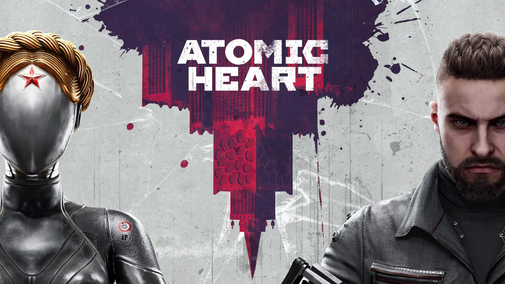

Популярные новинки!
Тут каждую неделю повляется самая популярная игра! Если она становится попадает сюда на этой неделе, то на неё идёт выгодня скидка только на нашем сайте!

Этот сайт создан с целью продавать игры по выгодной цене! У нас в продаже имеются самые новые, популярные новинки в игровой индустрии, по очень выгодной цене, что и отличает наш сайт от многих других!

Корнеев Дмитрий Викторович
Atomic Heart — это экшен от первого лица в чрезвычайно стильном сеттинге, где СССР после Второй мировой войны стал лидером в производстве роботов. События игры происходят в 1955 году, когда гениальный учёный Дмитрий Сеченов на пороге запуска «Коллектива 2.0» — программы по управлению роботами с помощью мысли.